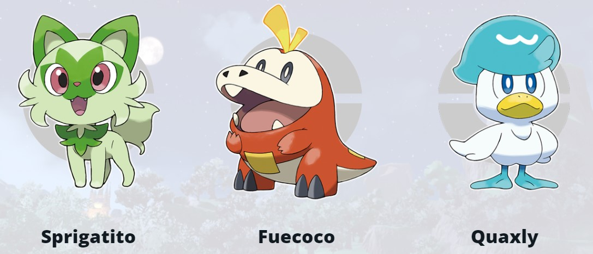

Pokemon Scarlet and Violet
Hoy se realizó el evento Pokémon Presents y los fans de la franquicia recibieron una enorme sorpresa durante la transmisión: se presentaron Pokémon Scarlet y Pokémon Violet, lo que da inicio a la novena generación. El anuncio no fue lo único sorprendente, ya que la mejor parte es que los juegos van a llegar este mismo año, marcando el momento que está pasando Nintendo Switch y la gran cantidad de contenido que tiene reservado para el 2022. El anuncio llegó acompañado de un trailer, que adelantó un poco de lo que se podrá ver en esta nueva entrega. Lo que queda claro -tanto por lo que se mostró como por la descripción oficial- es que Pokémon Scarlet y Violet va a llevar la propuesta que ya presentaron en Pokémon Legends: Arceus a un nuevo nivel. Los entrenadores van a explorar un mundo abierto donde “varias ciudades sin fronteras se mezclan a la perfección con la naturaleza”. Este RPG de Game Freak también va a traer a tres nuevos pokémon iniciales, que generaron una reacción bastante prometedora: Sprigatito va a ser un gato de tipo hierba; Fuecoco es un pokémon con aspecto de cocodrilo o de pequeño dinosaurio que va a ser de tipo fuego; y, en tercer lugar, Quaxly va a ser un pato de tipo agua.
